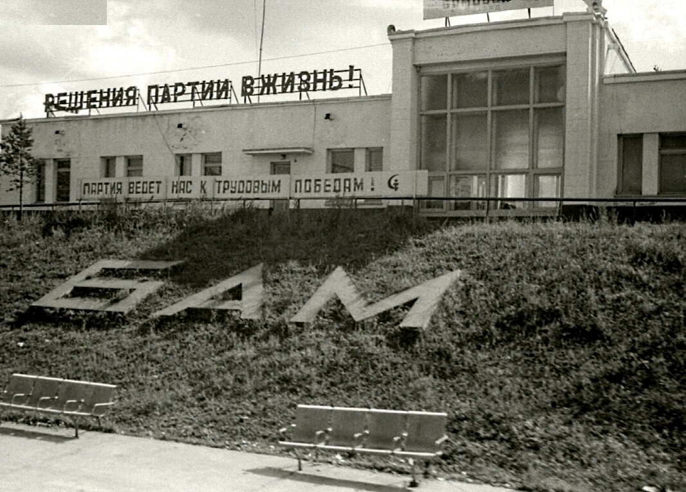
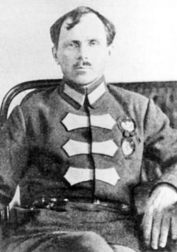
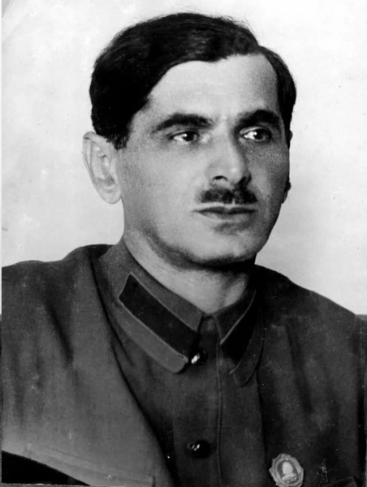
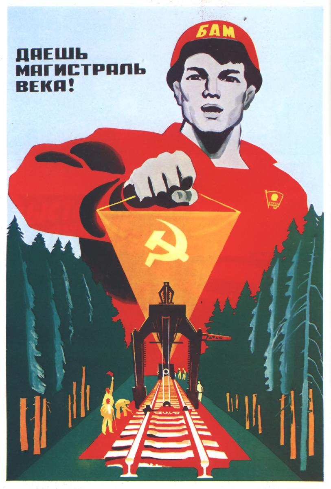
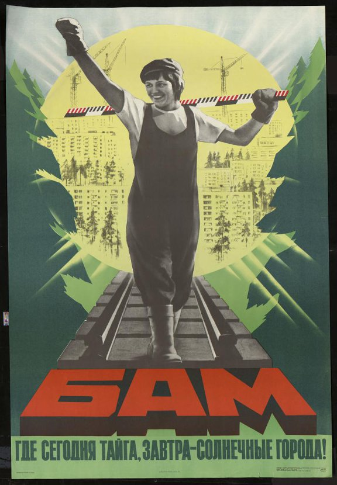
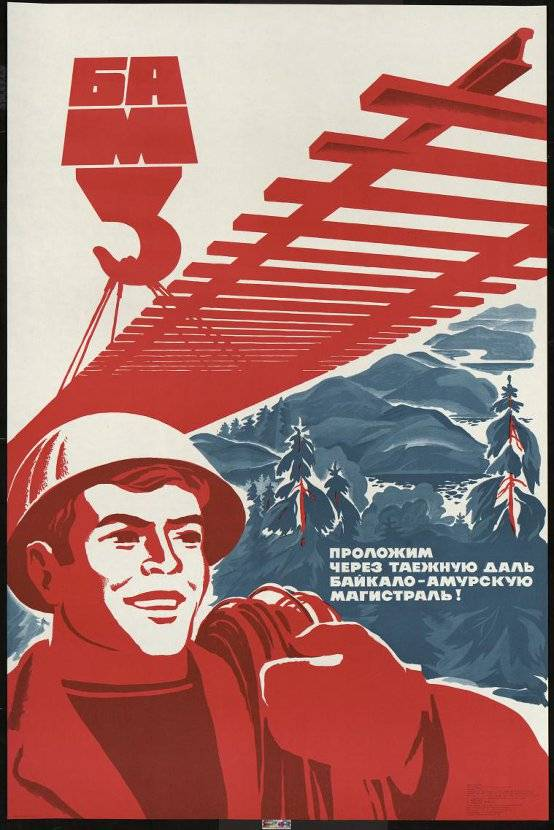
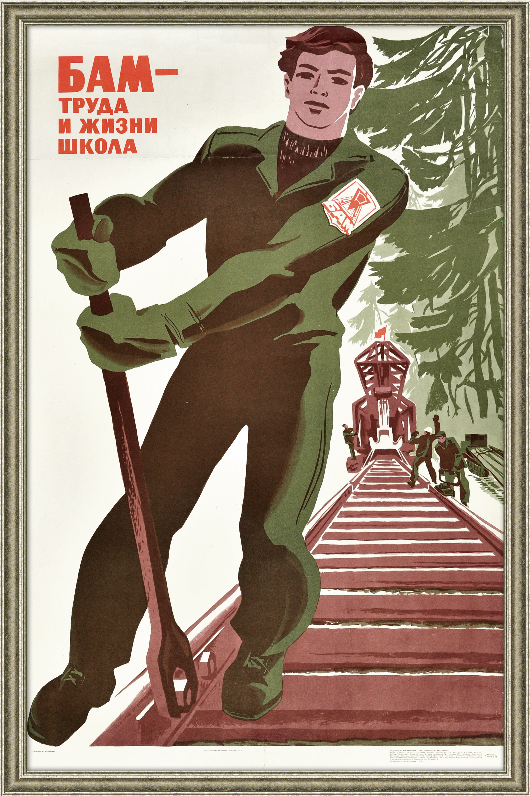
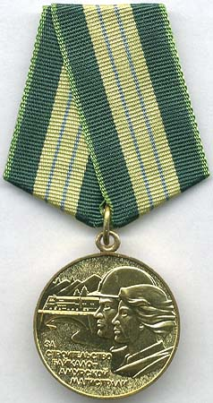

История строительства Байкало-Амурской магистрали
В этом разделе я расскажу историю строительства Байкало-Амурской магистрали. Без существенных подробностей, но самое главное.
Все картинки кликабельны. При нажатии на картинку её можно увеличить. Наборы картинок можно просматривать с помощью переключателей-стрелочек (при увеличении одной картинки из набора).
Дореволюционная Россия
Предложения о строительстве «железной дороги через всю Сибирь» выдвигались ещё в XIX веке Русским техническим обществом (РТО) в 1888 году. Было два варианта: проложить дорогу севернее или южнее Байкала. В 1889 году полковник генерального штаба Н. А. Волошинов провёл разведку на севере, а инженер Прохасько — на юге.
Несмотря на то, что северный маршрут (по которому сейчас пролегает БАМ) был на сотни вёрст короче южного, Волошинов был категорически против его использования. Выступив перед членами РТО, он объяснил, что страна со слабой экономикой, какой была тогда Россия, просто не сможет позволить себе стройку в той местности — мешали многоводные реки, болота, ручьи, ключи, морозы до -50 °C: «…поэтому проведение линии по этому направлению оказывается безусловно невозможным уже в силу одних технических затруднений, не говоря уже о других соображениях». Из-за длины трассы на юге и «технических затруднений» на севере дорога не была построена.
Цели строительства были, кроме освоения природных ресурсов, прежде всего, военные. Главным образом это близость существующего Транссиба (в то время — Великий Сибирский Путь), с Китаем. Транссиб был единственной крупной дорогой, связывавшей Дальний Восток с европейской частью страны. В случае войны с Китаем Дальний Восток мог быть отрезан от остальной страны.
Предложения строительных проектов звучали и в начале XX века, например в 1906 году на Иркутском совещании о путях сообщения в Сибири. В 1911-1914 году проводились изыскательные работы севернее Байкала. Но тогда дорога так и не была построена, а череда войн и революций на время приглушила обсуждение проекта новой железной дороги в Сибири.
Сталинская стройка
Снова заняться проектом «второго Транссиба» уже советское правительство подтолкнули события в Китае в 1920-е годы. В 1929 году произошёл конфликт на Китайско-Восточной железной дороге (КВЖД), южной ветке Транссиба, — Манчжурия захватила контроль над КВЖД, из-за чего СССР даже пришлось применить Красную Армию. В 1927-1933 годах ввиду нестабильной военной обстановки на КВЖД её работа была сильно затруднена. Таким образом, необходимость строительства новой дороги стала ясна.
Первый этап строительства железной дороги, которую в будущем назовут Байкало-Амурской магистралью, начался в 1926-1927 годах с проведения железнодорожными войсками РККА первых транспортно-экономических изысканий трассы Хабаровск — Советская Гавань. В 1930 году Далькрайком (Дальневосточный краевой комитет) ВКП(б) использовал материалы проведённых изысканий для разработки предложения в адрес ЦК ВКП(б) и Совета Народных Комиссаров (СНК) СССР. Это было предложение о прокладке трассы через север озера Байкал в направлении Хабаровска. В этом документе будущая железная дорога была впервые названа Байкало-Амурской магистралью (БАМ).
В 1931 году были проведены предварительные изыскания по направлению Хабаровск — Советская Гавань, и в 1932 году начали проводиться подготовительные работы по организации строительства, также было создано Управление строительства Байкало-Амурской железнодорожной магистрали. 17 июня 1932 г. изыскательная партия Г. З. Зборовского определила место примыкания БАМа к Транссибу неподалёку от села Тахтамыгда. Воспоминания техника этой партии В. Слободского: «А 18 июня с утра мы отошли от входной стрелки разъезда Тахтамыгда на запад 250 метров и поставили нулевой пикет. Долго красным карандашом (краски у нас не было) выводил я на шейке рельса вертикальную трассу и знак пикета № 0...». Будущая станция получила название Бам, которое носит и сегодня:

По приказу Народного Коммисариата Путей Сообщения СССР (НКПС) главой Управления строительва Байкало-Амурской железнодорожной магистрали назначили С. В. Мрачковского. Многие специалисты, инженеры, исследователи называли неподъёмным то, что навалилось на Мрачковского. Действительно, кроме жёстких сроков, ситуация усугублялась незаселённостью и малоизученностью территории, по которой прокладывали магистраль, а также суровыми природными условиями и отсутствием дорожной инфраструктуры — даже срочные грузы приходилось ждать по 2 месяца.

Ещё одной проблемой стала нехватка кадров. Нужного числа работников набрать не удалось, а уже набранные не хотели оставаться. Причиной были большие проблемы со снабжением продовольствием, одеждой, медикаментами, отсутствие жилья и т. д. Так, вместо необходимых 25 тыс. человек (среди которых инженеры, техники, счётные работники, разнорабочие и т. д.) по факту, к середине 1932 г., на дороге трудились лишь 2.5 тыс. человек — в 10 раз меньше!
Стройка, можно сказать, захлебнулась. Поставленные задачи оказались невыполнимыми, даже несмотря на старания Мрачковского, — а он смог добится от наркомата труда «БАМовского» коэффициента 1,62 —, и финансирование было прекращено. Начались разговоры о свёртывании проекта.
Создание Бамлага
Сложившаяся к осени 1932 года ситуация показала, что строительство невозможно было продолжать. Главной проблемой, всё-таки, была нехватка рабочей силы. Однако, строить нужно было: осенью 1931 г. Манчжурия была оккупирована японскими войсками, что создавало реальную угрозу железнодорожному сообщению вблизи государственной границы СССР. К решению проблемы решили подойти радикально.
В результате 120-го заседания Политбюро ЦК ВКП(б), 23 октября 1932 г., вышло постановление СНК СССР «О строительтстве Байкало-Амурской магистрали», в котором, кроме технических деталей (количество техники, указания о строительстве инфраструктуры, о выделении денег и т. д.), был важный пункт: строительство Байкало-Амурской магистрали возлагалось на ОГПУ (Объединённое государственное политическое управление при СНК СССР, образовано на базе НКВД РСФСР) с использованием заключённых исправительно-трудовых лагерей.
После выхода упомянутого постановления приказом ОГПУ №1020/с («с» - секретный) от 10.11.1932 был создан БАМЛАГ, подчинявшийся непосредственно ГУЛАГу (официальное название — Байкало-Амурский исправительно-трудовой лагерь). На БАМЛАГ, кроме собственно строительства БАМа, возлагались также прокладка вторых путей на Транссибе и его реконструкция, а также лесозаготовка, деревообработка, добыча золота и многие другие работы. Головная контора лагеря была организована в г. Свободном (ныне Амурская область).
Вскоре в посёлке Сковородино начала работу железнодорожная лагерная командировка (локальное подразделение лагерного типа), через которую ежегодно пропускались тысячи следующих на восток заключённых, а также выгружались прибывшие на строительство БАМа (на ветку ст. БАМ — Тында) заключённые. Средний состав из 30 вагонов доставлял их около тысячи.
БАМЛАГ укомлектовывался ударными темпами. К примеру, уже к весне 1933 г. большиство вольнонаёмных заменили на заключённых — если в декабре 1932 г. вольнонаёмных было 62%, то к апрелю их было не более 12%.

Питание в лагере организовывалось по принципу «кто не работает, тот не ест». Работающие заключённые получали 500 г - 1 кг хлеба и суп. Неработающие получали только 300 г хлеба без супа. Действовала система поощрения переработок: за перевыполнение плана полагалась дополнительная выдача питания. Положение заключённых усугублялось плохой одеждой и обувью.
За перевыполнение, кроме дополнительного питания, можно было получить сокращение срока, хотя на практике это происходило очень редко.
Такая система получения заключёнными еды только за выробатку нормы, конечно, не нова. Но именно Нафталий Аронович Френкель довёл её до совершенства и успешно применял в своих "проектах". Под его руководством был построен Беломорканал (полностью заключёнными). Руководством Бамлага также занимался он.

Кроме того, в лагере был создан так называемый спецлагсуд (выездные сессии Военной коллегии Верховного суда СССР в г. Свободном), который мог быстро выносить самые жёсткие приговоры, в том числе высшую меру наказания. Как пишет В. Прядкин в очерке «Бамлаг», таким образом появилась «настоящая фабрика смерти, подобная нацистским лагерям в Германии» - за 7 дней августа 1937 г. было расстреляно 837 человек. Всего же, лишь по официальным данным, в лагере погибло 40 тысяч заключённых только от голода и болезней, не считая расстрелов — их число гораздо больше.
Формальной причиной расстрела могло стать «вредительство»: например, проложили участок дороги, запустили проверочный вагон, а он сошёл с рельс. И всех причастных к строительству — на расстрел. Это может показаться нерациональным — потеря рабочих рук. Но рабочих рук хватало, ведь составы с новыми заключёнными прибывали чуть ли не ежедневно.
Рост и распад Бамлага
Лагерь очень быстро разрастался. Строились новые отделения, лагерные пункты. Прибывали всё новые и новые вагоны с заключёнными.
Количество заключённых в БАМЛАГе ежегодно ощутимо росло. Например, если на конец 1932 г. в БАМЛАГе числилось только 3800 заключённых, то уже к 1 апреля 1933 г. их было 16 тысяч, а к 1 января 1934 г. - 62 тысячи.
В 1935-1938 гг. БАМЛАГ был одним из самых крупных трудовых лагерей в СССР. Его подразделения растягивались на 2000 км. Количество заключённых исчислялось сотнями тысяч. Так, в 1935 году их было 153 тыс., в 1936 г. - 180 тыс., в 1937 г. - 127 тыс., в 1938 г. - 200 тыс. Силами заключённых строились железнодорожные ветки военного назначения, автомобильно-гужевые дороги, а также проходила реконструкция Транссиба, строились ветки БАМа
К 1938 г. лагерь разросся до огромных размеров, и управлять созданным «монстром» становилось всё труднее и труднее, а ведь БАМЛАГ — это не только сам лагерь, но и совокупность автономных систем со своей инфраструктурой: с сельхозами, мастерскими, цехами, со своей системой управления и многим другим.
В итоге, в мае 1938 года, БАМЛАГ был расформирован, и на его базе были организованы железнодорожные исправительно-трудовые лагеря: Амурский, Южный, Западный, Восточный, Юго-восточный, Буреинский. Эти лагеря попали под управление вновь созданного Управления железнодорожного строительства НКВД на Дальнем Востоке (ЖДСУ). В 1940 г. на базу ЖДСУ было создано Главное управление лагерей железнодорожного строительства НКВД (ГУЛЖДС) СССР, главой которого был назначен Н. А. Френкель.
Начало строительства БАМа
2 сентября 1937 г. был издан приказ НКВД СССР №00561 «Об организации строительства Байкало-Амурской железнодорожной магистрали», в котором начальником строительства назначался Френкель Н. А.
В 1938 году началось строительство западного участка от Тайшета до Братска, а в 1939 г. — подготовительные работы на восточном участке от Комсомольска-на-Амуре до Советской Гавани.
Участок БАМ — Тында был завершён в 1941 г., но в 1942 г. был разобран, потому что рельсы с него были очень нужны на строительстве Волжской рокады. Вообще, с началом войны строительство магистрали приостановилось. Но уже в 1943 г. Госкомитет обороны принял решение строить участок Комсомольск — Советская Гавань. В 1945 г. он был введён в эксплуатацию и сыграл важную роль в войне с Японией. В июне 1947 г. силами заключённых Амурского ИТЛ продолжилось строительство участка Комсомольск-на-Амуре — Ургал.
В план первой послевоенной пятилетки было включено строительство линии Тайшет — Лена. Велась реконструкция ветки Известковая — Ургал. В 50-е годы на участке Тайшет — Лена было открыто движение. Это имело важное экономическое значение: открывался надёжный транспортный доступ в бассейн Лены, что стало важным фактором, стимулирующим освоение природных ресурсов края. В общей сложности, к началу 60-х годов было построено 1150 км железнодорожного пути БАМа.
Строительство с использованием заключённых в полной мере так закончить и не удалось: слишком много ресурсов было брошено на строительство автомобильных дорог, на реконструкцию и строительство новых веток Транссиба, а также из-за применения рабского труда заключённых, скудного питания и почти полного отсутствия медицинского обслуживания, отсутствия землеройной, буровой, погрузочно-разгрузочной, автомобильной техники (её работа делалась вручную). К тому же, помешала Великая Отечественная война.
От лагерей ГУЛАГа до Великой стройки
Здесь я кратко расскажу о том, что происходило на БАМе во время между двумя главными периодами (30-е — 50-е годы, период БАМЛАГа и 70-е годы, период «Великой стройки»).
Нельзя сказать, что после распада БАМЛАГа прекратилось использование принудительного труда заключённых. Оно продолжилось в том же виде. Однако, суть этого содержится в предыдущих трёх главах, поэтому здесь я решил не повторяться. Следует сказать, что от принудительного труда отказались (хоть и не полностью и не сразу) после смерти Сталина. В 1957 году началось расформирование ГУЛАГа, и доля принудительного труда заключённых в СССР заметно снизилась. Тогда, в частности, на БАМе стали освобождать несправедливо осуждённых заключённых (тех, которые смогли выжить) и нанимать работников за зарплату.
Конечно же, без проблем в это время не обошлось. Серьёзной проблемой стали землетрясения, происходившие на территории, где планировалось прокладывать магистраль.
Одно из них — Муйское землетрясение магнитудой 7,6, произошедшее 27 июня 1957 года с эпицентром неподалёку от северного склона реки Удокан. Оно повлекло за собой сдвиг русел рек, образование новых озёр, водопадов, трещин глубиной до 20 км, смещение хребта Удокан и снижением уровня Намаракитской впадины.
Для исследования этих землетрясений в 1962 Институт земной коры Сибирского отделения Академии Наук (АН) СССР начал изучение сейсмологической активности по трассе БАМа. Землетрясения в зоне БАМа хоть и были серьёзной проблемой, всё же они не остановили строительство.
В 60-х начали всерьёз задумываться над полномасштабным строительством БАМа, планировалось даже проложить его ответвления в Якутию и далее на Камчатку и Чукотку. Главной целью было вдохнуть жизнь в гигантские территории СССР, получить удобный доступ к огромным природным богатствам, развить сибирские регионы.
Вновь сыграли и внешнеполитические факторы. В 1960-х Китай стал предъявлять территориальные претензии, устраивать провокации на границе СССР. Крупнейшей из таких стал конфликт на отсрове Даманском, потери СССР в котором составили, по разным оценкам, от 58 до 99 человек убитыми и от 68 до 94 ранеными. Для защиты железнодорожного сообщения с Дальним Востоком нужна была дорога, расположенная дальше от границы, чем Транссиб.
Даёшь БАМ!
Во время празднования 20-летия освоения целины в Алма-Ате, 15 марта 1974 г., генеральный секретарь ЦК КПСС Л. И. Брежнев назвал БАМ «важнейшей стройкой девятой пятилетки». Вскоре она была объявлена Всесоюзной комсомольской ударной стройкой.
«Товарищ генеральный секретарь Коммунистической Партии Советского Союза! Мы, посланцы комсомольских организаций Москвы, Ленинграда, всех союзных республик, выполнить важнейшее поручение партии готовы! Отдать все силы, знания, жар комсомольских сердец делу Коммунистической Партии, строительству коммунизма клянёмся, клянёмся, клянёмся!»
Так на XVII съезде ВЛКСМ («комсомола»), проходившем с 23 по 27 апреля 1974 г., комсомольцы сформулировали своё отношение к новому этапу освоения восточных районов страны в обращении к Брежневу. Уже 27 апреля в зале заседания можно было увидеть отряды комсомольцев в рабочей одежде, собравшихся со всего СССР, которые прямо оттуда отправлялись на стройку. Здесь напрашивается аналогия с парадом на Красной Площади 7 ноября 1941 г., с которого солдаты отправились сразу на фронт.

У этой стройки есть существенное отличие от ранних «строек социализма»: здесь не использовался принудительный труд. В 70-х мотивацией для строителей стали служить льготы, премии, высокие зарплаты, чеки на автомобили. Свою работу делала и пропаганда, воодушевляющая молодёжь на трудовые подвиги ради строительства коммунизма, рассказывающая о пути в будущее.





Агитационные плакаты
Хотя строительство БАМа начинается намного раньше, в публичной памяти и истории страны он остался как брежневская «молодёжная стройка». Такое название неслучайно, ведь, действительно, строителями были в основном молодые люди возрастом в 20-30 лет. Трудовая мобилизация велась через комсомольские организации, и привлекали туда людей очень многих специальностей, главным образом инженеров и строителей.
Вся страна строит БАМ
Был распростраанён лейтмотив «вся страна строит БАМ». Это не было преувеличением. На стройку съезжались люди со всего СССР, со всех союзных республик. Каждой республике было выделено шефство над строительством какой-нибудь станции или городка.
Например, Ургал построен укранцами, Муякан — белорусами, Уоян — литовцами, Кичера — эстонцами, Звёздный — армянами, Улькан — азербайджанцами, Солони — таджиками, Алонка — молдаванами, Тында — выходцами из Москвы, Чара — казахами, Икабья - грузинами.
Так многие станции и посёлки получили колорит тех республик, выходцами из которых они были построены. Этот колорит выражается, прежде всего, в архитектуре станций. На связь с происхождением своих строителей намекают и названия улиц построенных посёлков. Например, в Тынде есть Арбат, Красная Пресня, улица Московских строителей.


Некоторые "колоритные" станции БАМа
Ход последней Великой советской стройки
Хотя в истории началом полномасштабного строительства числится 1974-й год, реально стройка началась чуть раньше, в 1972 году. Тогда были начаты работы по прокладке участка БАМ — Тындинский (название Тынды до 1975 г.), который был разобран в 1942-м году.
Но всё же полномасштабное строительство начинается именно в 1974-м, после выхода постановления №561, о котором я уже упоминал в главе 8. Всего предстояло проложить более 4200 км пути. В апреле 1974 года был создан «Всесоюзный ударный комсомольский отряд имени XVII съезда ВЛКСМ», ставший первым таким отрядом на стройке.
Организация строительства пошла довольно быстро. Так, в июле 1974 г. была создана комиссия Совета Министров СССР по строительству и освоению БАМа, в январе 1975 г. было создано Главне управление по строительству Байкало-Амурской железнодорожной магистрали (ГлавБАМстрой), в сентябре 1975 г. был создан даже научный совет АН СССР по проблемам БАМа.
Распространённые в Союзе «социалистические соревнования» не обошли стороной и БАМ. В октябре 1976 г. была утверждена медаль «За строительство Байкало-Амурской магистрали», которая сразу стала самой почётной и престижной на магистрали.

Строительство пошло ударными темпами. Далее — кратко этапы строительства. 14 сентября 1975 было уложено «серебряное звено» линии Тында — Чара, а в декабре 1975 г. прошёл первый поезд от Усть-Кута до посёлка Звёздный. Участок БАМ — Тында был сдан во временную эксплуатацию в ноябре 1976 г. В 1977 г., в октябре, было открыто постоянное движение на этом участке, а также первый поезд прошёл по участку Тында — Беркакит, который окончательно введён в эксплуатацию в 1979 г. В 1980 г. началось движение по трассе Комсомольск-на-Амуре — Берёзовка (199 км), в 1981 г. — на участке между Леной и Нижнеангарском (556 км), в 1982 г. открыт участок Ургал — Берёзовка (303 км). В 1984 г. было начато движение на участке Тында — Дипкун (136 км).
И вот мы подошли к «золотой» стыковке. Она произошла на разъезде Балбухта (Забайкальский край). Здесь, 29 сентябрая 1984 г. в 10:05 по московскому времени, встретились западный и восточный участки магистрали, продвигавшиеся друг к другу 10 лет. 1 октября прошла торжественная уклада последних, «золотых» звеньев БАМа.


Золотая стыковка БАМа
На станции Куанда был открыт монумент славы строителей БАМа. Сквозное движение на БАМе было открыто на торжественном митинге в Тынде 27 октября 1984 г.

Монумент славы строителей БАМа в Куанде (фото 1984 г.)

Торжественный митинг в Тынде 27.10.1984
Хотя строительство Байкало-Амурской магистрали с 1974 г. вошло в нашу историю и память как добровольная, комсомольская ударная стройка, это не совсем верно. Конечно, заключённых на строительство уже не бросали, но всё же значительная часть пути была построена не совсем добровольцами.
Руководство строительством восточного участка БАМа осуществлялось Министерством обороны СССР, а конкретно его Главным управлением железнодорожных войск (ГУЖВ). Разумеется, условия жизни и работы солдат не сравнить с условиями заключённых БАМЛАГа, но всё же это тоже не назвать добровольным трудом. Солдаты получали зарплату за работу на БАМе, но несравнимо маленькую, если сопоставлять уровень зарплат и льгот у комсомольцев на том же БАМе.
На ГУЖВ возлагалась постройка почти 1300 км пути от ст. Тында до ст. Постышево и реконструкция участка Комсомольск-на-Амуре — Берёзовка протяжённостью 203 км. Участок Комсомольск-на-Амуре — Берёзовка был завершён в 1979 году, таким образом замыкалось «восточное кольцо БАМа» (Известковая — Ургал — Комсомольск-на-Амуре — Волочаевка).
Закончили, да не совсем
Как уже было сказано выше, «золотые» звенья БАМа были уложены 1 октября 1984 года. Однако даже после укладки «золотых» звеньев БАМ ещё не принял окончательных очертаний. В 1986 году введён в эксплуатацию участок Ларба — Усьт-Нюкжа (206 км), построен участок Новая Чара — Тында.
Отдельно хочу отметить Северо-Муйский тоннель. Это тоннель длиной 15 км, который должен был стать самым длинным тоннелем в СССР. Пока он не был достоен, поездам приходилось ехать в длинный обход с большим уклоном (40 м на км). Завершение его строительства поставило точку в длинной истории строительства БАМа. Но вот завершено оно было только в 2003 г. В 1989 г. был построен лишь обход этого тоннеля с допустимыми значениями уклона (до 18 м на км).
Шла полным ходом и электрификация уже готовых участков. Так, например, в 1986 г. был электрифицирован участок Лена — Нижнеангарск (943 км), в 1987 г. - участок Нижнеангарск — Новый Уоян (179 км), в 1988 г. — участок Новый Уоян — Ангаракан (102 км). В 1989 г. был введён в эксплуатацию и электрифицирован новый обход Северо-Муйского тоннеля, а также участок Ангаракан — Таксимо (102 км), участки Тында — Новый Ургал и Нижнеангарск — Новая Чара.
И вот, Байкало-Амурская магистраль готова к окончательному введению в эксплуатацию. Это и произошло — в 1989 году подписан акт Государственной комиссии о приеме в постоянную эксплуатацию последних перегонов БАМ. Тогда вся магистраль была передана железнодорожникам — Министерству путей сообщения (МПС) СССР. Итоговая длина магистрали составила более 4200 км.
Следует отметить и цену этого проекта. Она составила 17,7 млрд советский рублей по ценам 1991 г., что сделало БАМ самым дорогим инфраструктурным проектом в СССР. По некоторым оценкам, эта цифра многократно превысила задуманные. Если переводить эти деньги на современные, то получится более триллиона российских рублей (в 2021 г.)
Вклад в науку
Разумеется, стройка такого крупного масштаба, как БАМ, не могла обойтись без новых исследований, внедрения и испытания новых технологий… Ведь стройка велась в экстремальных природных условиях, в вечной мерзлоте, сквозь непроглядную тайгу и полноводные реки.
Учитывая географические особенности БАМа, а именно тот факт, что он пролегает по зоне вечной мерзлоты, большой вклад сделан строителями БАМа в науку о ней. Например, для сохранения вечномёрзлых грунтов был найден способ с использованием термосвай (жидкостных систем охлаждения). Были также впервые разработаны методы использования конструкций из сортированного камня, применения пенопласта и геотекстиля для управления тепловым режимом. Применялись нестандартные решения во время электрификации участков БАМа.
БАМ после распада СССР
С распадом СССР Байкало-Амурская магистраль пришла в упадок. Объём перевозок заметно сокращался, обслуживающая магистраль техника устаревала, людей для обслуживания не хватало, росли убытки от содержания магистрали.
Неудивительно, что в такой ситуации БАМ подвергся критике со стороны постсоветских экономистов и политиков. Например, экономист Егор Гайдар так высказывался об этой «стройке века»:
«Проект строительства Байкало-Амурской магистрали — характерный пример социалистической «стройки века». Проект дорогой, масштабный, романтический — красивые места, Сибирь. Подкреплённый всей мощью советской пропаганды, экономически абсолютно бессмысленный… Проект обошёлся примерно вчетверо дороже, чем предполагалось, и в полном объёме так и не был никогда завершён...»
В 1997 г. самостоятельное управление Байкало-Амурской магистрали было ликвидировано, и она административно стала относиться к Восточно-Сибирской железной дороге (на западе) и к Дальневосточной железной дороге (на востоке). Границей этих двух подразделений стала станция Хани.
Магистраль сегодня
Сегодня БАМ довольно неплохо оснащён технически. Треть магистрали электрифицирована (от Тайшета до Таксимо), обеспечена системами автоблокировки, автоматического перевода стрелок. От Тайшета до Усть-Кута магистраль двухпутная, а восточнее Усть-Кута — однопутная. Из-за этого поезда могут разъехаться только на станциях, что замедляет передвижение по магистрали.
БАМ загружен до предела. Пассажиропоток на магистрали небольшой, около 12 млн пассажиров в год, это менее 1% от объёма пассажирских перевозок по России. В год перевозится до 14 млн тонн грузов, преимущественно угля. Несмотря на это, Байкало-Амурская магистраль остаётся нерентабельной: в 2019 году РЖД понесло убытки в 52 млрд рублей.
Нерентабельность магистрали объясняется низкой пропускной способностью и, как следствие, невысоким трафиком: доход от перевозки грузов не может покрыть издержки на её содержание. В связи с этим планируется развитие магистрали с увеличением пропускной способности.
В 2013 году был начат процесс модернизации БАМа и Транссиба. Были открыты проектно-изыскательные работы на участке Тында — Хани. Тогда партия геологов и геодезистов начала свою работу под строительство новых 11 железнодорожных разъездов (Моховой, Глухариный, Сосновый, Заячий, Студенческий, Мостовой, Медвежий, Иванокит и др.) и вторых путей. Модернизация должна была завершиться в 2017 году, но была отложена на 2020 год, а после и на 2021 г.
20 августа 2019 г. было начато строительство второго Северо-Муйского тоннеля, но в 2020-м из-за коронавирусной пандемии оно было остановлено.
В 2021 году РЖД рассматривало 3 варианта расширения БАМа. Самый дешёвый — 332 млрд. рублей, самый дорогой — 2,89 трлн рублей. Первый, стоимостью 332 млрд рублей, предполагает расширения для дополнительного вывоза 16,6 млн тонн угля с Эльгинского месторождения. Для этого должен быть перестроен участок Улак — Комсомольск, проложены дополнительные 553 км путей.
Второй варинат предполагает дополнительный вывоз, кроме 16,6 млн тонн угля, 13,4 млн тонн грузов на порты Приморья. Это потребует ещё 1,1 тыс. км путей. Расчётная стоимость проекта — 1,22 трлн рублей.
Наконец, третий вариант предполагает развитие инфраструктуры с расчётом на грузопотоки в объёме 240 млн тонн. Сюда включены уже работы не только на БАМе, но и на Транссибе, строительство путей в обход Хабаровска, второго Кузнецкого тоннеля и моста через Амур. В общей сложности это 2,25 тыс. км путей. Реализация такого проекта обойдётся в 2,89 трлн рублей. Постепенно планируется реализовать третий вариант.
Увеличение пропускной способности БАМа и Транссиба должно обеспечить рост грузопотока к морским портам и повлиять на структуру грузоперевозок в целом. В то же время главным сдерживающим фактором для роста объёма перевозок остаётся дефицит провозных мощностей.
Магистраль завтра
В феврале 2019 года президент России Владимир Путин в ежегодном обращении Федеральному Собранию заявил, что к 2025 году пропускная способность БАМа и Транссиба будет увеличена до 210 млн тонн. Он подчеркнул, что это очень важно для развития Сибири и Дальнего востока.
По итогам 2021 года завершён первый этап модернизации, пропускная способность БАМа и Транссиба увеличена до 144 млн тонн, проложено 670 км новых путей. В 2022 году её планируется увеличить до 158 млн тонн. В рамках второго этапа модернизации планируется проложить более 1300 км путей.
В 2021 году силами железнодорожных войск начато строительство второй ветки БАМа (БАМ-2) Улак — Февральск, стоимость работ на котором на 2021 — 2023 гг. оценивалась в 3 млрд рублей. Привлечение военных объясняется дефицитом трудовых ресурсов.
Более того, из-за оттока из страны мигрантов и нехватки кадров для строительства решили привлечь заключённых. Речь идёт о заключённых, которые могут заменить часть срока исправительными работами. Директор ФСИН Александр Калашников заявил, что подать заявку на это могут 188 тыс. осуждённых. «Это будет не ГУЛАГ, это будут абсолютно новые, достойные условия» — добавил он. В июне 2021 г. было подписано соответствующее соглашение между ФСИН и «БамСтройМеханизацией». ФСИН всячески отвергает все сравнения с ГУЛАГом и заявляет, что привлекаться заключённые будут только добровольно.
Модернизация БАМа сегодня нужна для развития Сибири и Дальнего Востока. Также немалую роль он играет в торговле с азиатскими странами, главным образом с Китаем, а также в перевозке грузов с запада на восток (к океану) и обратно. В условиях санкций Евросоюза, введённых в 2022 г. в связи со «специальной военной операцией», России, скорее всего, придётся ориентироваться главным образом на азиатские рынки. В связи с этим ценность БАМа может возрасти.